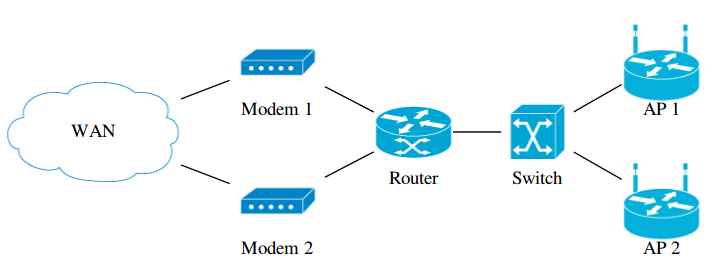
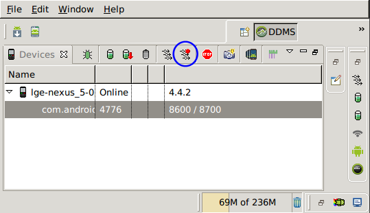
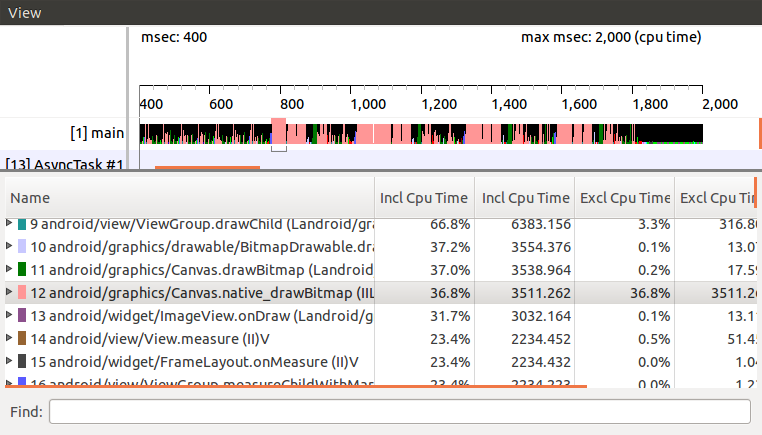

Kafka reassignment 方案
在 Big Data 領域中，Apache Kafka 經常扮演著重要的角色，在敝司 Appier 也不例外。 由於公司業務一直在快速成長，我們需要處理的資料量也是持續增加，對應到 Kafka 則是需要不斷的加入更多機器。 在加入新的機器到 Kafka cluster 後，資料並不會自動轉移到新機器上，而是需要手動的處理，指定每一個 partition 由哪些 broker 負責，這個動作稱為 Partition Reassignment。
Kafka 官方有提供工具 Reassign Partitions Tool 來幫忙產生 partition assignment，然而這個工具最大的缺點是新產生的 assignment 不會去考慮到目前的分佈，搬移時總是在大風吹。這樣做的問題除了需要較長時間才能完成搬移，在搬移時對於 Kafka cluster 產生的負擔也更大。理論上，如果我們只是加入一台新的 broker 進入 cluster，只需要將原先舊的 broker 各自搬一部分 partition 交由新的 broker 負責即可，這樣總共需要搬移的資料量會減少許多，對於執行時間與負擔也會較小。
正因為有這樣的需求，目前有不少現成的工具，不過在開始逐一介紹它們之前，我想要先定義出評斷的標準。這邊我想借用 DataDog 的 Topicmappr 的標準，再補上一點我個人的看法。
- Cluster Storage Rebalancing: 各 broker 的硬碟用量是否一致。有些工具會將 partition 的大小納入考慮，有些則是只考慮數量。
- Constraints Satisfaction Partition Placement: Kakfa 本身支援 Rack Awareness，各 partition 中的每份 replica 必須要遵守一定的規則，避免在單一 Rack (/Zone) 掛掉時，所有的 replica 都一起離線。這個項目用來指出工具是否能產生符合 Rack Awareness 的分配分式。
- Minimal Partition Movement: 是否只搬移必要且儘可能少的 partition。
- Leadership Optimization: 一個 partition 會被存成多份 replica，但其中的 leader 會需要付出更多的資源，因此各 broker 所擔任的 leader 數量最好也能盡量一致。
- Deterministic Output: 當所有條件相同時，每次執行是否會給出相同的結果。對我來說這個指標並不是那麼重要，我更重是的是 "已經搬移完畢的 cluster 再次執行相同工具時，會不會再次進行搬移"。
- Leader Distribution If One Broker Down: Kafka 本身支援 HA，當有 broker 掛掉時，其他 broker 就會接替它 leader 的工作，但剩餘 broker 所分配到的 leader 數量是否也能保持一致呢？
定義好標準之後，那就來評價一下現成的工具吧。
dimas/kafka-reassign-tool
用 Ruby 寫成的小工具，用來產生 assignment JSON file，後續搭配官方工具使用。
文件上並沒有說明所使用的演算法，我粗略從 source code 與註解判斷，覺得應該是簡單的 Greedy 策略。
- Cluster Storage Rebalancing: 不區分 topic，只考慮每個 broker 負責的 partition 數量
- Constraints Satisfaction Partition Placement: 無
- Minimal Partition Movement: 有
- Leadership Optimization: 有，但或許因為是 greedy 策略，實測上有看到分佈得不夠完美的情況。
- Deterministic Output: 有
- Leader Distribution If One Broker Down: 無
SiftScience/kafka-assigner
Java 寫的工具，也是產生 assignment JSON file，我判斷也是 Greedy 策略，但有支援 Rack Awarenewss。
- Cluster Storage Rebalancing: 不區分 topic，只考慮每個 broker 負責的 partition 數量
- Constraints Satisfaction Partition Placement: 有
- Minimal Partition Movement: 有
- Leadership Optimization: 有，但或許因為是 greedy 策略，實測上有看到分佈得不夠完美的情況。
- Deterministic Output: 有
- Leader Distribution If One Broker Down: 無
datadog/kafka-kit/topicmappr
使用 Go 所開發，同樣產生 assignment JSON file，使用的演算法是 First-fit-decreasing bin packing。
比較特別的是 topicmappr 可以選擇 placement strategy，選擇 count 時那就跟其他工具差不多，只考慮 partition 的數量；但選擇 storage 時，則會針對每個 partition 的大小進行安排。當使用 storage placement 時，工具會從 ZooKeeper 的特定 endpoint 來取得 partition 資訊，而這些 endpoint 則會需要額外的工具來更新。
- Cluster Storage Rebalancing: 可以選擇使用 storage 和 count 兩種策略。
- Constraints Satisfaction Partition Placement: 有
- Minimal Partition Movement: 有
- Leadership Optimization: 有，但實測上有看到分佈得不夠完美的情況。
- Deterministic Output: 有
- Leader Distribution If One Broker Down: 無
everpeace/kafka-reassign-optimizer
這工具是將 reassignment 問題轉成 Mixed Integer Programming 並透過 lp_solve 解決。 使用 Scala 實作，工具在搬移時是直接對 Kafka 進行操作，不需要再透過官方工具，並且支援 batch，可以控制每個 batch 所搬移的 partition 數量。 這工具並不支援 throttle，不過其實 throttle 可以使用 Kafka config 進行控制，所以我會另外準備一份 Shell script 來控制 throttle，搭配這個工具使用。
沒有支援 "Leadership Optimization" 是這個演算法較大的缺陷。 此外要注意的是，當 cluster 規模較大時，這工具將會遭遇 OutOfMemoryError 問題而無法使用。 不過除了使用內建的演算法外，這工具也支援從外部提供 assignment JSON file，因此也可以使用前述的任何一項工具來產生 assignment file，並透過這工具來進行搬移，藉此享受到 batch 帶來的好處，而不用擔心同時搬移過多 partition 時，可能會造成 cluster loading 過重的問題。
- Cluster Storage Rebalancing: 不區分 topic，只考慮每個 broker 負責的 partition 數量
- Constraints Satisfaction Partition Placement: 無
- Minimal Partition Movement: 有
- Leadership Optimization: 無
- Deterministic Output: 有
- Leader Distribution If One Broker Down: 無
我過去的作法
在許多年前我曾使用過 SiftScience/kafka-assigner 一段時間，其中最無法滿足我需求的是 "Leader Distribution If One Broker Down" 這項目。 事實上這個指標正是我自己加進去的，目前其他工具似乎都並沒有考量這個需求。 前述的工具大都能夠在所有機器健康時，儘可能讓每一台機器擔任相同數量的 leader。 但當你在管理像 Kafka 這樣的分散式系統時，免不了會遇到機器故障下線的情況，這導致該機器負責的 partition 需要由其他機器擔任 leader 的情況，而我希望在這種情況下，剩餘機器擔任 leader 的數量，仍然要儘可能一致。
我提出的解決方案是自己設計這套演算法，背後的想法很簡單，事先根據 broker 數量與 replication factor，列出所有可能的 assignment 的排列組合，以 broker 數量為 4，replication factor=2 為例，所有可能的 assignment 如下:
(1,2) (2,3) (3,4) (4,1)
(1,3) (2,4) (3,1) (4,2)
(1,4) (2,1) (3,2) (4,3)
接著根據 partition 的數量，依序從這些組合中取出使用，例如當 partition 數量為 3 時，那就會對應到 (1,2), (2,3), (3,4)。如果 partition 數量超過組合數，那就從頭再取一輪即可。 按照這個順序進行安排，不只可以確保 leader 的數量是平均分佈的，當其中一個機器故障時，其他機器分配到的 leader 數量也會是平均的。
現在我們已經決定好所有 partition 將會使用的 assignment，但並不是直接依序對應，因為如果這樣做的話，每次需要增減機器時，大多數的 partition 都會需要搬移，將會破壞掉 "Minimal Partition Movement" 這項需求。我們對應的方案是找出儘可能少 partition 搬移量的安排方式，而具體的解法則是建立一個 Bipartite Graph，左邊的節點是現有的 assignment，右邊的節點則是將要使用的 assignment，將 edge weight 設定為搬移量，將問題轉化成 Minimum Weight Perfect Bipartite Matching，而這問題可以使用 Kuhn-Munkres algorithm 來解。
也就是說我們事先不去考慮原有 assignment 的情況，而是在產出出新的 assignment 之後，再利用 Bipartite Matching 找出較少搬移的對應方式。 這方案在機器數量較低時確實還不錯，因為排列組合的數量並不多，現有的 assignment 和未來的 assignment 有很高的重複性，實際需要進行搬移的 partition 數量並不多。 後續我真的使用的了這方案持續了數年，但是當機器數量增加到一定數量後，呈幾何級數增長的排列組合，會讓需要搬移的 partition 數量大幅增加，這也是我最終放棄這方案的主因。
- Cluster Storage Rebalancing: 不區分 topic，只考慮每個 broker 負責的 partition 數量，在 worst-case 比其他工具差了一些。
- Constraints Satisfaction Partition Placement: 無
- Minimal Partition Movement: broker 數量少時還可接受，數量多時則效果不佳
- Leadership Optimization: 有
- Deterministic Output: 有
- Leader Distribution If One Broker Down: 有
Pinterest 的演算法
在尋找新的解決方案時，我注意到了 Pinterest 的系列文章 "Using graph algorithms to optimize Kafka operations" (Part 1 & Part 2)。 跟前述的工具不同的是，這兩篇文章只講述了演算法而沒有提供現成工具，並且它並不會對資料進行搬移，僅靠改變 assignment 中的順序，來達成 "Leader Optimization"。
這裡使用的技巧是將問題轉成 Maximum Flow，接著就可以使用現成的演算法，例如 Edmonds-Karp 或著 Dinic's 來解。 建構 flow network 的細節我就不說了，請自行閱讀原文。大致就是將 leader 負擔較重的 broker 放在左側，負擔較輕的則放在右側，並試著從中找出 "flow"，將部份 leader 的責任從左側轉交給右側，藉此達成平衡。
以下圖為例，共有四個 partition，其中 leader 指向 partition 標記為藍色，partition 則指向剩餘的 replica。
p1: [1,2,3]
p2: [2,3,4]
p3: [1,2,3]
p4: [2,1,3]
在加入了原文中提到的兩個 residue node，並且有正確處理好浮點數誤差之後，在我準備的數百組測試資料中，這個演算法都可以產出最佳的結果。 我過去有參與程式競賽的經驗，也確實有使用 Maximum Flow 來解題的情況，但並沒有遇過類似的題目，而引入 residue node 的技巧更是聞所未聞，因此嘗試這個演算法對我來說也是個很新奇的體驗。
由於 Pinterest 的演算法只能平衡 leader 的數量，並不會真的搬移資料，因此在加入新的機器或移除舊機器時時，還是需要其他工具的配合。 我也很好奇 Pinterest 是怎麼解決這問題，Pinterest 針對 Kafka 的管理，陸續推出了兩套工具 DoctorK 和 Onion，然而我在這兩套工具中，都沒有看到這份演算法的使用。
延伸到 partition
現在平衡 leader 的演算法有了，我只要再找出能夠將 partition 平均分散到所有機器的方法就可以了。 看著現有的演算法，我不禁思索如果我將建構 flow 的方式調整一下，是不是也能夠用來解這問題。
這次我們不是考慮 leader，而是考慮每個 broker 上負責的 partition 數量，將負擔過重的 broker 放左側，其餘的放右側。 如果 broker 存在 replica 中，就用箭頭指向對應的 partition (標示成藍色，表示這份 partition 可以考慮從這台 broker 移出)。再從 partition 指到剩餘的所有 broker (表示可以將 partition 改放到這些 broker)。如下圖所示:
p1: [1,2,3]
p2: [2,1,4]
p3: [1,2,4]
p4: [2,1,3]
| 上圖省略了 residue node |
經過我的測試資料實測後，這個演算法確實適用，並且產生的結果也都是最佳的。
甚至如果想要增加 replication factor 也是做得到的，只要新增一個節點指向所有 partition，並適當調整每一個 edge 的 capacity 即可，如下圖。
| 上圖省略了 residue node |
至於減少 replication factor，原先我也想靠新增一個節點在 sink 側來達成，實測卻發現在某些案例不會成功，因為可能會遇到 partition 的所有 replica 都在右側的情況。 目前的方案還無法支援 Rack Awareness，但只要建構出適當的 flow network，其實也是可以滿足需求的。
只要我們先使用這個演算法，就可以將 partition 平均分佈到各機器上。接著再執行 Pinterest 原本的演算法，就可以在不做額外資料搬移的情況下，讓 leader 的分佈也更加平均，聽起來不錯吧。
再延伸到 1st-follower
現在只剩最後一個需求尚未滿足了，我希望在某個 broker 掛掉之後，他所扮演的 leader 也能平均分散給其他 broker。 要達成這件事，其實就是要讓 assignment 中的前兩個元素，即 (leader, 1st-follower) 盡可能的平均分佈。 因此我們在產生了先前的結果之後，再多執行一次演算法，希望能達成這個需求。
這次的方案不能夠進行資料搬移，也不能改變 leader，只能改變 1st-follower，否則會破壞前兩次演算法的結果。 這次建構的 flow network 會將 broker 換成 broker pair，原先的 (leader, 1st-follower) 指向 partition，partition 再指向 (leader, 其餘的 follower)。如下圖所示：
p1: 1,2,3
p2: 2,1,4
p3: 1,2,4
p4: 2,1,3
| 上圖省略了 residue node |
這次的方案只適用於 replication factor 大於 2 的情境，並且沒有辦法讓 (leader, 1st-follower) 在所有的測試資料中都達成完美的分佈，但相較於一開始的分佈還是能改善許多，所以我想這仍然能算是一個不錯的 heuristic 策略。
總結
在連續套用同一個演算法三次，並且依序解決了三種需求後，我們總算得到了一個似乎還不錯的方案。
有點可惜的是，即使在已經處理過、且分佈得很平均的情況下，再次執行演算法仍然會得到需要搬移的指示，我認為這是 residue node 帶來的副作用。 幸好只要在執行演算法之前先主動判斷一下目前的分配是否已經完美，只有在還有改進空間時才執行即可。
- Cluster Storage Rebalancing: 不區分 topic，只考慮每個 broker 負責的 partition 數量
- Constraints Satisfaction Partition Placement: 有
- Minimal Partition Movement: 有
- Leadership Optimization: 有
- Deterministic Output: 無，但可以加上額外檢查來排除。
- Leader Distribution If One Broker Down: 有
雖然得到了一個不錯的成果，這個方案在正確性方面卻還是讓我有些擔心，雖然在我隨機產生的數百個測試資料中都能跑出完美的結果，但這終究沒有數學證明支持，或許會在極端情況下遇到例外。 不過目前作為一個 operation 工具使用，我想也是夠用了。很高興在工作上能遇到這樣的挑戰，並最終提出了一個有趣的解決方案。
關於效率 - 那些我希望同事知道的事
身為一位非常在乎效率的工程師，我經常在思考如何進一步提昇自己的效率，而對於那些拖累我效率的事物，則總是令我感到厭惡。 以前的我總以為這些我所在乎的事是常識，無法理解其他人為什麼不選擇這樣的做事方式，但隨著經驗越來越多，我才理解到一個簡單的道理，那就是每個人都不一樣，工作模式也大不相同，我認為理想的方案，或許其他人並不這麼認為。
這篇文章的內容其實我已構思許久，但直到理解了人與人的差異之後，我才真的有動力來完成這篇文章。 我的方案不見得是對的，也未必適合每個人，但至少可以讓其他人知道我是怎麼想的。唯有先互相理解，才能夠彼此尊重。
我的效率秘訣
軟體工程師的主要任務是開發，但有趣的是，幾乎所有其他的任務都有著更高的優先權。如果一個功能需要開發兩天，你不太可能等到兩天後才開始處理 alert、著手老闆新交待的事項、回答同事問題。 既然頻繁的 context switch 是免不了的，如何有效率的 context switch 便成了我的主要目標。
我最核心的思想是使用 Priority Queue 的概念，總是優先做最高優先權的任務，並在完成後繼續這個步驟挑選下一個任務來處理。如果這個任務需要較長的時間才能完成 (超過一小時)，我會在這期間尋找適合的中斷點去檢查 Email 與 Slack 訊息，並將新的任務加入 Priority Queue。如果新的任務需要立刻執行，那我就會改作新的任務，並將手上原先的任務重新放進 Queue 中。
那麼這個 Priority Queue 具體怎麼實行？一直將任務移進移出不會很麻煩嗎？事實上我的 Priority Queue 很大一部份就是 Gmail 本身，那些來自外部的任務，本身經常就是一封信件。而我會將信箱視作一個 To-do List，只有在一件事完全結束後，我才會將這封信 Archive。因此所謂的將任務放進 queue、移出 queue，其實很多時候都只是在心裡上的操作，而實際上卻是什麼都不用做。Gmail 本身沒有任意排序的功能，在待處理信件太多時，要從中找出最高優先權的任務並不容易，而我的對應方案是 snooze 短期不會處理的信件，讓我能只專注在較高優先權的任務。
如果任務需要其他同事的介入，早期我會在回信後就將整串 thread archive，畢竟現在的狀態是被同事 blocking，而且等同事處理完回信給我時，這整個 thread 又會重新回到我的信箱中。然而這世界並沒有這麼理想，總是會有些不回信的同事。雖然面對這樣的情況感到無奈，但只要我們改用 snooze 即可，若在一段時間後沒收到回信，這個 thread 還是會重新出現在信箱中，方便我再次提醒同事或著採取其他手段。
Slack 也是我 Priority Queue 的另一部份，不過相比於 Gmail 有個集中的 inbox，分散在 Slack 各個 channel 的訊息，如果在讀訊息當下沒有馬上做出處理，後續很容易就會忘掉。幸好 Slack 上有提供 Saved items，只要是沒有辦法立刻處理完畢的訊息，我都會把它們加進 Saved items，確保我最終不會漏掉。
Gmail 與 Slack 仍無法滿足的部份，我是在 personal wiki 內建一個 To-do List 來達成，所有臨時出現的需求，我都會暫時紀錄在 wiki 內，後續再找時間執行或著開成 ticket。
我常看到的問題
- Slack 溝通盡量一次說完。Instant Message 從來就不是有效率的溝通工具，請一開始就說明來意，不要在 tag 了對方之後，還要對方花時間等你打字。
- 除了緊急事件，不要在非上班時間 tag 同事。
- 詢問 SQL 問題，請把 query 排版好，並附上相關資訊。請儘可能簡化 query，只留下與你問題相關的部份，並說明 query 想要達成的目的。
- 邀請同事參加會議，請讓對方事先知道主題，如果有相關文件也應該儘早提供。
- 週期性的會儘早確認是否要召開，若取消則儘早通知。
我的一些實踐
我在工作上所扮演的其中一個角色是 Data Governance Team 的成員，這個 team 負責掌管公司的 Data Lake，所以這個角色經常會需要向同事發布新訊息，像是新增了哪些表格、哪些欄位即將退休等等。
為了讓同事們能夠有效率的掌握這些資訊，我所作的其中一個改進是每個月只寄一封信，信件上會明確說明這個月有哪些新表格與欄位、將在什麼時候退休什麼欄位，以及其他注意事項。對於需要 migrate 的項目，我通常會提供至少兩個月以上的時間，讓同事有充分的時間處理。寄信頻率降低，雖然某種程度上來說延後了訊息發布的時間，也確實會讓整件事情被完成的時間被拉長。但 latency 跟 throughput 從來就是不同的東西，在可接受的時間內追求更高的執行效率，才是我們真正的目的。
即使有了以上的機制，在退休欄位這件事上，仍舊會發生意外。偶爾我們會在實際刪除某個欄位後，才發現仍有重要的服務依舊依賴這個欄位，並且沒有辦法立刻的完成 migration，這時候只好 rollback 並重新發布新的 deadline，而這個過程則相當的令人沮喪。我們最新的方案是，要求每個 project 將自己所需要用到的表格與欄位，紀錄在各自 repository 內的一個指定檔案，並且我們有自動化的檢查工具，當我們發布退休欄位的公告時，當下就能找出還在使用這些欄位的 project 並做出通知。對於 project 的維護者來說，在 repository 內多維護一個檔案，也並不是什麼太麻煩的事。
追求效率的提昇是個無止盡的過程，唯有不斷探索，才能持續進步。May the Efficiency be with you.
如何設計出好的 data pipeline
在 Appier 擔任 Data Engineer 一職至今已滿五年，在這過程之中開發與維護 pipeline 一直是我最重要的工作項目之一。 除了開發全新設計的 pipeline 以外，許多舊有的 pipeline 也在不斷的持續改進，也有些 pipeline 由於體質過差，也不得不全面重寫。 有趣的是，許多 pipeline 在改寫或重寫過後，input 與 output 仍然與之前沒有太大差異，那麼，究竟是什麼性質造就了一條好的 pipeline？
Effectiveness
綜觀所有的特性，我認為效率是其中最重要的一項。我這裡指的並不是一條 pipeline 每秒鐘能處理多少資料，或著每天的花費是多少。 之所以需要建立 pipeline，目的就是要讓後續使用 data 能更加有效率，如果不將下游使用一併納入考慮，單純計算 pipeline 本身的效率，我認為意義不大。 事實上我認為整個 Big Data 領域在解決的問題，有很大一部份就是在針對讀取進行最佳化，NoSQL 的崛起正是絕佳的例子。
在納入上述觀點之後，pipeline 的價值就很容易計算了：原先不透過這條 pipeline 讀取資料所需的花費 減去 改成透過讀取 pipeline 產出所需的花費和 pipeline 本身的花費，就是這條 pipeline 帶來的價值。
基於 Cloud Storage 的特性，為了增加讀取的效率，可以考慮進行以下的設計：
- 使用 Columnar Storage Format 如 Parquet
- 若使用 Columnar Storage Format，可進一步在檔案內對指定欄位進行排序
- 將檔案以 partitioned 形式存放
- 適當控制每一個檔案的大小
然而就像使用 NoSQL 一樣，一個 index 不太可能滿足所有的查詢；只用一種方式存放資料，也不太可能讓所有讀取都有效率。 這時你就會需要輸出第二份資料，它可能是原先資料的另一種 partitioned 擺放方式，也可能是 pre-aggregated 之後的結果。 而實作方式它可能是一條全新獨立的 pipeline、或著是基於原先資料的 downstream pipeline，也可以讓原本的 pipeline 同時輸出多份資料。
在考慮多種輸出格式的情況下，效率的評估就變得極為困難了。如何決定每一種應用該讀取用哪一份資料？什麼時候該為了還沒被最佳化的應用多輸出一種格式？每一份輸出真的有帶來額外價值嗎？ 這問題雖然困難，但所幸我們也不需要追求完美解答，只要大方向不要偏離太多即可，尤其是當需求與應用也在不斷隨時間持續改變。
Extensibility & Complexity
Pipeline 是一種需要穩定，卻又免不了根據需求持續演進的專案，而複雜的 pipeline 將會導致演進變得困難。
在設計 pipeline 初期，我總是希望 pipeline 在架構上能夠儘可能的簡單，最好是能只用幾句話就說明清楚。 既然註定了要隨需求持續演化，那一開始就要更加的避免過度設計。
而在 pipeline 上線之後，面對持續演進的需求與急迫的時程，有時也會不得不做出大幅增加複雜度的設計。 面對這樣的問題，我的方案是定期的 refactor，確保複雜度能收斂至合理的範圍。這個作法就像是 Refactor 書中提到的切換兩頂帽子，一個帽子負責功能演進，另一個負責降低複雜度。
Reliability
對於需要處理大量 input 資料的 pipeline 來說，出現異常資料幾乎是無可避免的事，尤其是當上游資料來自於公司外部。
為了避免最終產生錯誤的 output，你可能會想讓 pipeline 在遭遇錯誤時停止運作，直到狀況釐清並完成 hotfix。 但除非你能確認資料來源足夠乾淨，否則頻繁的緊急處理最終會耗光維護人員的心力，於是進入另一個選項。
這個選項當然就是惡名昭彰的 silent exception，將有問題的資料通通丟掉，從此 pipeline 再也不會 crash，大家都很開心。 直到有一天使用者回報，你才發現有大量合法的資料被視為有問題丟掉，而這個狀況已經不知道持續多久了……。
我們針對這個問題的解法是，將有問題的資料輸出到特定的位址並搭配 alert。 因為 pipeline 並沒有被中止，維護人員並不需要第一時間進行處理，疑似有問題的資料也因為集中擺放而容易分析，甚至在 hotfix 過後想重新加回這些資料時，也可以只針對這批資料進行。
Maintainability
當 pipeline 規模變得龐大，各種稀奇古怪的 bug 將變得不再那麼稀有，你可能會遇到故障的機器、各種 library 中的 bug，或著 pipeline 中自己犯的錯，也可能只是來自 input 資料本身的異常。 這聽起來就跟一般的 bug 沒什麼不同，但讓事情變得棘手的是發生的機率。 設想一下你的 pipeline 每天處理十億筆資料，不時接獲使用者反映懷疑資料有問題，你需要從上游的十億筆資料中找出對應的那筆，然後判斷錯誤是否來自資料本身。
如果錯誤來自資料本身，對應的動作可能是通知上游，和使用者說明原因，讓他們相信 pipeline 其實是可靠的，然後祈禱類似的問題不要太頻繁的再次發生。
然而如果問題來自 pipeline 本身，接下來就是殘酷的 debug 考驗。 因為 cost 考量，你不太可能有一個完整規模的 staging 環境，而較小規模的實驗很可能難以複製出問題，特別是當問題只會機率性出現時。 因此你必須將所有能夠獲取的訊息都納入考慮，嘗試從中找出蛛絲馬跡，並對所有的機制都保持懷疑。
我遇過許多讓我印象深刻的 bug，像是某知名雲端供應商，當你開出數百台機器建立 cluster 時，可能會有其中幾台在互相通訊時，會有小機率出現封包中某一個 bit 有 flipping 的情況，導致最終產生的資料數值可能不正確。 另一個是最近才剛找出來的 Spark correctness issue，會在 "GROUP BY" 之後出現重複的資料。
面對這樣的狀況，我的建議是必須要將 pipeline 設計成容易調查，例如紀錄每份 output 是在什麼時間產生、它對應的 input 分別是哪些檔案。 如果 pipeline 有中間產物，或許可以保留一段時間再刪除。如果 pipeline 會需要修改過去資料，將檔案設計為 immutable 而避免 overwrite 也可能有幫助。 這些零碎的小細節，很可能是你面對毫無頭緒的 bug 的唯一救命稻草。
Scalability
隨著資料量的增加，pipeline 免不了需要具備 scalability 的能力。 所幸，現在常見的 big data framework 都能夠處理好這件事，頂多就是需要額外注意一下 data skew 的情況。
Usability
在顧及上述所有特性之後，別忘記，pipeline 的存在目的就是讓後續資料使用能更有效率。 因此，將輸出的資料設計成容易理解、容易使用也是很重要的，簡單的例子像是將相同類型的欄位使用相同的 prefix/suffix，使用適當的型態與預設值，提供適當的文件……等等。
以上就是我認為一個好的 pipeline 需具備的所有特性，只要遵從這些原則，多半就足以讓 pipeline 物有所值。 至於體質真的有問題的 pipeline，有時就沒有辦法只靠 refactor 來改進，這時就需要更完整的 migration plan 來徹底改頭換面，不過這又是另一個故事了。
程式競賽小技巧 - Binary Search
最近在 Kaif 開了一個 程式競賽 區，打算在上面提一些我在競賽中學到的技巧， 不過既然我有一個很久沒動筆的 Blog，不如就直接寫在這裡，再把連結貼到 Kaif 吧。
Binary Search 在程式競賽中，指的不是用來檢查元素在 sorted list 中位置的方法， 而是一種解題技巧。適用 Binary Search 的題目，通常會有兩個特性：
-
目的是要求出某個變數 "滿足某個條件" 的最小值， 且變數超出此值後也都會繼續滿足此條件。
-
無法使用有效率的方法計算出答案，但只要給變數任意的值， 都能容易的判斷出是否滿足條件。
在針對整數域時，我的 code 會像是這樣：
int lower = 0; int upper = 1000000; // 某個大到一定滿足條件的值 while (lower < upper) { int mid = (lower+upper)/2; boolean satisfied = check(mid); // 將 mid 代入檢查是否滿足 if (satified) upper = mid; else lower = mid+1; }
離開 while 迴圈時，lower 會與 upper 相等，並且就是所求答案。
那麼在實數域會有什麼不同呢？這就是我覺得有意思的地方了。
由於浮點數精確度的關係，是有可能發生 mid 等於 lower 的情況，導致形成無窮迴圈。
好在我們知道比較浮點數應該要允許一點誤差。通常我的習慣是加上一個常數
Є，於是 code 會長這樣：
public static final double EPSILON = 1e-8; while (lower+EPSILON < upper) { // ... }
使用這個技巧，只要你選擇了 "適當" 的 Є，程式就會是可以正確運行的。
但什麼情況下會出問題呢？
當你的 lower 很大，而 Є 很小時，同樣有可能發生 lower+EPSILON==lower 的情況。
那有沒有更好的方法？看看以下的 code 吧。
double lower = 0.0; double upper = 1e30; for (int times=0; times<50; times++) { // 注意這行 double mid = (lower+upper)/2; boolean satisfied = check(mid); if (satisfied) upper = mid; else lower = mid; }
結果就是什麼都不要管，固定跑個足夠次數就好。:p
我自己習慣跑 50 次，但也看過其他參賽者使用 40, 100, 200 次。
使用 Graphviz 繪製網路拓樸
自從離開了 Android 產業之後，我加入了一間與網路服務相關的新創公司。 在工作內容上，經常會需要理解對方的網路環境，而解決這個問題最好的方法， 就是事先準備好一份網路拓樸並歸檔。
Requirements
因此，接下來的任務就是尋找一個適合我們的 Diagram Editor，以下是我們的需求：
- 跨平台：公司內三種作業系統都有人使用，需要選擇一個各種平台上都能使用的檔案 格式，開放格式尤佳。
- 簡單：單就繪圖操作的部份，希望是連非技術人員也能夠使用。
- 容易修改：當網路架構有些微變動時，希望能夠很容易的完成修改，不需要大量的微 調各節點的位置。
- 版本控制：不管是使用什麼格式，版本控制都是必要的，但 binary 檔案管理起來總 是比較麻煩。
其實不難看出來，會列出這種需求，我根本就只是想內定 Graphviz 嘛！確實如此， 但在 簡單 這個項目上，Graphviz 卻似乎是最差的選擇，不把這個問題處理好，我看 大概很難順利將 Graphviz 導入公司。
我們暫且先不論 Graphviz 是否足夠簡單，還是先把環境準備好，實際畫張圖來看看。
Installation
其實在我進行 survey 內定之前，就已經先透過 Google 找了一遍，出乎意料
的只找到了一篇：Network topology with graphviz。
不過有總比沒有好，試著依樣畫葫蘆跑一遍，結果卻是 dot 執行時出現錯誤。查了才知
道，原來 Graphviz 到了版本 2.29 之後 node 才開始支援 image 屬性。但我所使用
的 Ubuntu 12.04 的套件庫中的版本只到 2.26，且一直到 14.04 才開始使用更新的版本。
這種類似的事情遇多了，最簡單的方法就是找個現成的 PPA，通常我會從官方維護的開始
找起，於是：
sudo apt-add-repository ppa:gviz-adm/graphviz-dev
接著要安裝時，apt 卻又出現錯誤：
graphviz : Depends: libgraphviz4 (>= 2.18) but it is not going to be installed
好在 Ask Ubuntu 上早有解答，照著做即可：
sudo apt-get update sudo apt-get remove libcdt4 libpathplan4 sudo apt-get install graphviz
Images
裝好新版本的 Graphviz 後，還需要用來表示各種節點的圖片，這裡我所選擇的是 Cisco 免費提供的 icons。
Cisco 提供的圖片格式是 JPEG，而根據 Graphviz 的文件，應該是有支援 JPEG，
但不知道是哪裡出了問題，我並沒有辦法順利使用，所以我是自行轉成 PNG。
Results
最後的結果就是下圖：

而上圖對應的 dot 原始檔如下：
graph G {
node [shape=none, height=1.2]
rankdir=LR
// Modems
node [labelloc="b", image="icons/modem.png"] {
"Modem 1"
"Modem 2"
}
// Routers
node [labelloc="b", image="icons/atm router.png"] {
"Router"
}
// Switches
node [labelloc="b", image="icons/atm switch.png"] {
"Switch"
}
// Access Points
node [labelloc="b", image="icons/wireless router.png"] {
"AP 1"
"AP 2"
}
// Sub-networks
node [labelloc="c", image="icons/cloud.png"] {
"WAN"
}
// Relationships
"WAN" -- {"Modem 1", "Modem 2"} {
{"Modem 1", "Modem 2"} -- "Router" {
"Router" -- "Switch" {
"Switch" -- {"AP 1", "AP 2"}
}
}
}
}
如果是曾經接觸過 dot 的讀者，或許會覺得我所使用的語法很怪異，因為原始碼中的
那些大括號與縮排，在 dot 語言中其實是完全沒有作用的，我這樣寫的目的，純粹是
想降低使用 Graphviz 繪製網路拓樸的學習難度。以下是我的一些考量：
- 將 宣告 與 建立關聯 的部份完全區分開，規定關聯一定要寫在最後面。
- 將節點宣告的概念，由原先的 修改後續 node 的 default attributes， 變成簡單的 集合中的元素。
- 由於我們所需要繪製的網路圖只會是樹狀結構，使用縮排可以更方便閱讀。
Conclusion
我們實際的使用方式是將網路拓樸紀錄在 Redmine 的 wiki 內， 而這裡有一個 plugin，能夠直接將 wiki 中的純文字的 dot，在預覽和儲存後直接以 轉換後的圖片顯示，實在是方常方便。
然而使用 Graphviz 有其極限，對於複雜的網路拓樸，或著對美觀極度要求時，使用其他 的軟體搭配仍然有其必要。
Android Java 層 Debug 工具介紹 (2)
在系列文的第一篇文章中，我已經介紹過 Log Viewer 與 Profiler，而這次所要介紹的內容則是 Debugger，以及一些 Reverse Engineering 工具。 那麼，就先從 Debugger 開始吧。
Remote Debugging
對於 Android App 開發者來說，在 Android 上 debug 是在自然不過的事了。
您只需要準備好專案，點一下 Debug 按鈕，IDE 就自動進入 debug 模式，接著無論是
下中斷點、單步執行，或是查看變數內容……等，一切皆任君差遣，但……
- 如果不是透過 IDE 啟動的程式執行到一半，出現了預期之外的狀況，這時您還能不 能透過 Debugger 進行 debug 呢？
- 若是執行的程式沒有建立專案，甚至沒有 Source Code 時，Debugger 還能有所作為嗎？
- 又或著是系統廠 RD 最想要的功能，能不能對系統 Service 進行 debug？
上述三個問題的答案都是 YES，當然其中也會有一些前提必須滿足，像是 debug 的對象必 須具有 debuggable flag，或著手機本身 image 為 Engineer build。在前一篇文章中我也 提過了，不需要太擔心這個條件無法滿足，因為下一個章節就會來解決這件事。:)
我在這裡所要介紹的技巧，其實就和對 App 進行 debug 本質上是一樣的，只不過操作的 過程比較手動一些。我會以 Eclipse 進行以下的示範，但其實使用任何一款支援 Remote Debugging 的 debugger 皆可，甚至連 Android plugin 都不需要安裝。
1. Select debug port

首先到任何一個看得見這畫面的地方，不管是 Eclipse 內建的 DDMS 也好，或著獨立的 Android Device Monitor 也好，總之只要是這個畫面都好。
對著想要進行 debug 的 process 點一下。在點選之前，最後一欄的文字本來會是 8600
之類，但點選之後就會變成 8600 / 8700。
這些數字是其實是 Port Frowarding 所開在本機的 port，透過這些 port，就可以和手機 內特定 process 對應的 JVM 進行溝通。
在點選之前的 port 是以流水號方式從 8600 開始編號，而只要是被選取的 process 就會額外準備一組 port 8700。因為數字是固定的，因此在後續設定 debugger 時會比較方 便，所以這個步驟其實並不是必要的。
2. Create debug configure

接下來，在 Debug Configurations 中建立一個新的 Remote Java Application，
右邊的 Project 則視您 debug 的對象選擇，若是沒有對應的專案則請保持空白，
Port 則填上在前一步驟看到的數字。因為所有我打算進行 debug 的 process 都會事先
被我設定好 port 8700，因此我只需要準備一個 Debug Configuration 即可。
最後按下 Debug 按鈕，順利的話就能看到 debugger 成功 attach，可以開始 debug
了！
3. Start debugging!
如果您所 debug 的 App 在 Eclipse 中有對應的專案，相信接下來該怎麼做已經不需要 多說明了，開啟想 debug 的 source code、設好中斷點，接著等程式執行到該部份就好。
但如果是沒有專案的 App，因為 IDE 不知道要去哪裡找 source code，就算您自己開好了 對應的程式碼並試圖在上面建立中斷點，也壓根不會有作用。
現在請回到前一張圖，注意到視窗右半邊共有三個分頁，其中第二個分頁 Source 就是我
們要找的答案！

將所有需要用到的 source code 的 root 都用 File System Directory 加入後，您就
可以正常的建立中斷點，並隨著 debugger 在程式碼間遨遊了。若以 Android Framework
為例，您所需要加入的路徑大概會是 .../android/frameworks/base/core/java。
除此之外我還會移除掉原先的 Default，因為這裡面都是 Java 的 Library，而 Android
裡頭用的則完全是另一套，雖然提供的 API 大同小異，但實作完全不一樣，這樣是沒辦法顯
示正確對應的 source code 的。
若是連 source code 都沒有，其實您還是可以暫停 thread、觀察變數、單步執行，但是這 樣能做甚麼？別急，看完下一個章節就知道了。
Reverse Engineering
dex2jar
dex2jar 是一套將 dalvik bytecode 轉成 java bytecode 的工具，雖然轉換後的檔案 並沒有因此就變得較好讀，但早就有現成的 Java decompiler 可以搭配使用，例如 JD-GUI 就是一個常見的搭配。
dex2jar 的執行方式非常的簡單，直接吃 apk 即可：
dex2jar.sh CtsVerifier.apk
產生的檔案是 CtsVerifier_dex2jar.jar，接著用 jd-gui 開啟：
jd-gui CtsVerifier_dex2jar.jar
不過不是每一次都能像上圖這樣順利，經常會遇到 decompile 的結果不正常的狀況。 這時候也許您可以考慮換一套 decompiler 試試，像 JAD 就是另一個常見的選擇。 這幾天我也剛好在 android cracking 上看到另一套工具 Luyten，聽說效果比 JD-GUI 更好。
不管如何，遇到需要 reverse engineering 時，先搬 dex2jar 出來，也許就已經足夠了。 但若是遇到應付不了的情形，或許這時候就該呼叫 apktool 了。
apktool
apktool 是一個 decode / rebuild apk 的工具，將 apk 解開後的目錄結構如下：
AndroidManifest.xml apktool.yml assets lib res smali
前面提了好幾次的 debuggable flag 就在 AndroidManifest.xml 裡，開啟 debuggable 後 rebuild 並安裝至手機內，先前說過的工具就全部都能使用了。
smali
接下來請注意到 smali 這個資料夾，這裡存的是利用 smali 這套工具將 dalvik bytecode 反組譯之後的結果。
smali 這名字取得很有趣，是冰島語的 assembler。為什麼選冰島語？因為 dalvik
是冰島的一個鎮的名字。
smali 的語法源自於 jasmin，並將指令替換為 Android 上所用的 Dalvik opcodes。
關於 smali 細節語法的說明，似乎不適合繼續寫在這篇文章內了，因此我這裡就貼一小段 source code 與實際產生的 smali 做對照，供各位做參考：
- source code (截取自 CtsVerifier)
public void add(TestListItem item) { mRows.add(item); notifyDataSetChanged(); }
- smali
# virtual methods .method public add(Lcom/android/cts/verifier/TestListAdapter$TestListItem;)V # 回傳值為 void .locals 1 # 除了參數以外只有一個變數，即 v0 .parameter "item" .prologue .line 37 # 對應的 source code 行號 iget-object v0, p0, Lcom/android/cts/verifier/ArrayTestListAdapter;->mRows:Ljava/util/List; invoke-interface {v0, p1}, Ljava/util/List;->add(Ljava/lang/Object;)Z .line 38 # p0=this, p1=item invoke-virtual {p0}, Lcom/android/cts/verifier/ArrayTestListAdapter;->notifyDataSetChanged()V .line 39 return-void .end method
smali 的語法其實並不難，因此在理解之後，少量的修改程式邏輯或著安插其他程式碼， 也都不會是什麼困難的事了。
Conclusion
這次兩篇文章共介紹了四種類型的工具，說明一下我使用各種工具的時機：
- Log viewer
- 尋找問題發生點
- 了解流程，除了訊息本身以外，也很容易藉由文字找出對應的程式位置
- Profiler
- 找出程式瓶頸與需要最佳化的位置
- 畫 call graph 幫助了解執行流程
- Debugger
- 觀察各 thread 的 method stack 與變數內容
- Reverse Engineering tools
- 不得已沒有 source code 的時候才用 XD
Android Java 層 Debug 工具介紹 (1)
今天又從硬碟裡翻出一份還在前公司時製作的內訓資料，是當時所有我會的 Android Java debug 工具的介紹，於是整理之後就成為了現在這篇文章。
本文中提及的工具與使用方法我都已測試過，即使在目前在最新的 Android 4.4 上也還能正常使用，但畢竟這些已經是一年前的資料了，或許已經有更新的工具能替代 使用，因此若是您知道其他更好用的工具，也希望您能不吝指出。:)
Log Viewer
老實說我從來就不覺得 ADT 附的 Log Viewer 好用，身為 command line
魔人，當然要選擇 command line 的作法。
Colored Logcat
雖然 adb 本身就有 logcat 指令，但既沒有對齊欄位，也沒有顏色識別，實在是
不容易從中識別出自己所關心的 log，好在早就有現成的 Colored Logcat。Colored
Logcat 是由 Jeff Sharkey 所開發的一個以 python 寫成，用來 parsing adb
logcat 的輸出，並加上顏色與對齊後輸出的工具。

由於原作者釋出 Colored Logcat 之後沒有持續維護，因此在 Github 及 Google Code
上都可以找到其他人的分支。我自己所使用的版本則是對其做了兩個修改：
- 增加 -v 參數使其可顯示每一筆 log 的時間
- 補上原實作漏了的 log 層級：FATAL
或許有人會問，這種工具怎麼看都還是比不上 ADT 內建的 Log Viewer 呀，究竟
command line 有何神奇魔力？這些工具單獨使用的話確實是不怎麼樣，但厲害的地方在於
它們可以很輕鬆的搭配其他 shell 指令而組合出更多彈性的功能，例如：
- 搭配 grep 以過濾關鍵字
- 將輸出 redirect (或 tee) 至檔案，方便後續處理
- 如果有使用 screen, tmux，還可以隨時暫停，並在畫面上搜尋關鍵字
Debug function
public static void debug(Object... arr) { StackTraceElement call = Thread.currentThread().getStackTrace()[3]; String className = call.getClassName(); className = className.substring(className.lastIndexOf('.') + 1); android.util.Log.v("_DEBUG_", call.getLineNumber() + ": " + className + "." + call.getMethodName() + " " + java.util.Arrays.deepToString(arr)); }
這個其實既不是 Log Viewer，也不能算是 debug tool，勉強只能算是個小技巧吧。
它的功用是在顯示的 log 前面加上 class name, method name 與行數，就像是 C 的
__FILE__, __LINE__ 與 __func__。
由於參數 arr 使用了 Java 5.0 開始才有的 Autoboxing 與
Varargs，因此無論是什麼參數、幾個參數都能接受，而輸出的部份又用了
deepToString，所以連陣列內容都能印出。
這個 method 其實不只能在 Android 上使用，一般的 Java
環境下也能運作，但需要將第二行中的常數 3 改為 2 才行。
Profiler
接下來這個 profiler 其實只是 ADT 內建的工具，官方也有一篇詳細
的教學，所以我就只以圖片與簡短描述帶過。
執行 profiler 共有兩種方式，第一種方式是在程式中安插程式碼：
第一種
// start tracing to "/sdcard/calc.trace" Debug.startMethodTracing("calc"); // 做 profiling 的區域 // stop tracing Debug.stopMethodTracing();
上述這個方法比較麻煩，但能確保 profiling 的對象只有自己關心的區域。
第二種

第二個方法則是直接在 Android Device Monitor 工具內，選好要 profiling 的 process，然後點上圖中被藍色圓圈圈起的按鈕，並在打算停止 profiling 時再按一下即可。

接著畫面上就會出現 profiling 的結果。
Call Graph
第一種方法執行完的 trace file 會存在 SD card 內，而第二種則是存在
/tmp/ddms....，可以從分頁名稱上得到確切的檔名。
有了 trace file，接著只要執行：
dmtracedump -g callgraph.png calc.trace
就可以得到如下的 call graph。

debuggable flag
第二種方法在使用上有個限制，即操作的手機必須是 Engineering build，或著所觀察的 App 具有 debuggable flag。
不過即使兩像條件都不具備也不用擔心，您還是可以用後續文章將會提到的 reverse
engineering tool: apktool，將原本的 apk 檔解開、加上 debuggable
flag、重新包裝回 apk 檔，然後就能開心的使用了。運用這種重新打包的手法，就算沒有
source code，也能將所需的 code 插入，因此正好可以拿來安插第一種 profiling
所需的 code，細節將會在後續的文章中說明。
篇幅好像差不多了，那麼就先在此打住吧。 接下來預計還會寫一至兩篇文章介紹 remote debugging 與 reverse engineering tool，希望我能早日完成。:)
Android CTS - 讓 Report 說話
接著來談談當初在負責 CTS 時遇到的最大困難，以及最後解決的方法。
什麼是 CTS？
Android 雖然是 Open Source Project，即任何的廠商都可以自行生產手機，但 如果想在出廠時內建 Google Play 等 Google 所提供的 APP，就必須與 Google 簽合約，即每一款生產的手機都需要通過 CTS 測試。
CTS 測試包含上萬筆測項，能否順利通過將影響手機是否能正式出貨，因此對各系 統廠而言，這都會是一個相當重要的任務。通過 CTS 的方式，是由廠商自行執行 Google 提供的 CTS 程式，並產生一份通過所有測試的 Report，Google 審核無誤 後，這樣就算大功告成了。
然而，即使是同一款手機，每一次執行 CTS 都不見得能得到完全相同的結果。這 部份有可能是手機本身的軟、硬體不穩定，也有可能是來自於 CTS 的 bug。
困難點
由於每次執行 CTS 得到的結果都不同，而只要成功產生一次全部通過的 Report 就可以提交，那麼是不是可以準備很多台電腦、很多台手機，每天二十四小時的跑 ，只要任何一次 ALL PASS 就好？
是的，這樣確實沒有問題。於是公司安排了一部分的測試人力負責運行 CTS，早期 是一天產出一份，後來不知道怎麼搞的，變成兩組人馬在做，有時候一天會產生近 十份報表。
如果是問題已經被解決的差不多的階段，這樣做確實很合理；但如果有些測試尚未 被解決，百分百會失敗，這樣做就不是很有意義了。而每一份報告送來給我時，通 常還會附上測試者自己的觀察，例如：「某個測試最近失敗的機率好像變高了」、 「同個型號的 A 手機一直失敗、但 B 手機就沒問題」、「晚上再開始跑好像比較 容易成功」。這些猜測有時正確、有時錯誤，然而因為 Report 實在太多，我也實 在沒辦法從中學到什麼。於是這些數不清的 Report，消耗了大量的人力與資源 ，卻什麼忙也沒幫上。
突破口
其實不難發覺，關鍵就在這些 Report 上。大部分需要的資訊，這些 Report 上都 有，只是太多了、太零散了，沒有辦法馬上調出我需要的資訊，例如：「X 測項最 近一週的失敗率是否比上週高」、「A 測試者跑 Y 測項時是否比較容易失敗」？
而解決的方法也就更簡單了，我花了三天時間寫了一個網頁，提供一個界面讓測試 者上傳 Report。程式收到 Report 後，就會擷取所有重要資訊，包含手機名稱與 識別碼、測試者的名字、執行時間和所有發生失敗的測試，並將這些資料統統丟進 資料庫。
突然之間，所有的問題都獲得了解答。我們利用這個方式發現各家電信業者在執行 傳簡訊相關的測試的成功率，從此規定以後都用成功率最高的業者的 SIM 卡 ；也發現了某測試者因為操作不正確，所以他所負責的報告經常會有額外的狀況。
所以，重點是？
其實重點就是，我要把這支程式的關鍵部份放出來。gist 連接在此。
至於為什麼不放整個網站出來？單純只是因為我的前端寫太爛，不好意思放出來讓 大家見笑。事實上，這個網站其實非常的簡單，甚至我放出的部份也沒有任何難度 ，只是單純的 parsing XML 並存進資料庫而已，真要說有難度的地方，也只是 parsing 時比較費工而已。所以我放出 parsing 的部份，希望有需要的人可以在 略做修改的情況下就能夠使用，如果在使用上有遭遇什麼困難，也歡迎與我聯繫。
Android CTS 筆記
我過去曾經在國內的二線 Android 系統廠服務了約一年半的時間，當時所負責的 工作之一，就是負責處理 Android CTS 問題。雖然不是所有的 Issue 都由我負責 到底，但第一關的釐清、分配，和解決最後無明確歸屬的 Issue，都是我的任務。 而這一年多來追蹤過的 CTS 問題少說也有百項，也因此累積了不少的筆記。
2013 年初我離職之後，這些筆記就一直塵封在我的硬碟至今。多虧了最近的年假 ，心血來潮花了整整一天的時間，終於有機會讓這些筆記重見天日。我把它們全部 都重寫成 markdown 格式，並且上傳至 Github 的 wiki，連結就在這裡。
希望這些資訊能給還在和 CTS 奮鬥的工程師們一些幫助，如果其中有任何錯誤與 不足的部份，還請不吝指出或著直接進行修正。
ydict - node.js 實作
What is "ydict"
身為一名 command line 魔人，儘可能的將所有在電腦上的操作在 command line 之內完成，是一件理所當然的事情，就連查字典也不例外，而 ydict 就是這樣的工具。
ydict 的資料來自於 Yahoo 字典，事實上 ydict 所作的事情就只是以使用者的輸入詞在 Yahoo 字典上查詢，然後 parsing 出重要的資訊，並以適合 terminal 的格式顯示在螢幕上。
但其實 ydict 並不是 "一個" 工具，事實上很多人都曾開發自己的實作， 而各實作也有各自的分支，我現在已經找不出最早是由誰開發的了。 在眾多版本之中，我使用了最長時間的是 freehaha 實作的 Python 版本， 其次則是 FourDollars 的 Perl 版本，在此先向兩位作者致上感謝。
My works
使用 ydict 這工具對我來說已經到了不可或缺的地步，但幾乎每隔一段時間 Yahoo 字典就會改版，而接下來的幾天在作者尚未更新之前，我就會沒有 ydict 可使用。 而另一方面，我也會希望能針對自己的需求，對 ydict 進行修改。
我也確實試過自己動手修改，但後續要繼續與原作者的版本接軌卻反而成了一件麻煩事。 而在先前嘗試修改的經驗裡，我覺得必須要有容易更新的 parsing 規則，才能夠快速的針對 Yahoo 字典的改版做出更新。正巧最近我剛學了一點 JavaScript 與 node.js，我想如果能像 jQuery 一樣使用 CSS selector 進行 parsing，事情也許會簡單很多，於是 ydict.js 就此誕生。
ydict.js 的一個主要設計考量是，parsing 與 display 必須分離，parsing 的部份只會回傳處理後的 json，而 display 只是單純的將 josn 檔依照格式顯示在螢幕上， 因此在任何一方修改都不會影響到另一方。 另外我也把 parsing 的部份包成 module，讓其他 project 可以直接引用，雖然我覺得這個功能完全只是雞肋。:p
此外，我也已經將 ydict.js 上傳 npm，因此只要執行下述指令即可完成安裝， 希望各位會喜歡。
[sudo] npm install -g ydict.js
What else?
我的好友 Andrew 與 Jeff 也和我一樣依賴 ydict，因此在去年 Yahoo 字典改版，各家實作卻都尚未支援之前，他們也都各自開發了自己的實作。
首先是 Andrew 的 shell script 版，使用 w3m 的超簡短作弊寫法， 麻雀雖小卻是五臟俱全。(使用前請先安裝 w3m 套件。)
另外就是 Jeff 開發的 LiveScript 版，和 ydict.js 一樣使用 cheerio 來處理 parsing，並且同樣也已經上傳 npm，因此只要執行下述指令即可安裝：
[sudo] npm install -g jydict